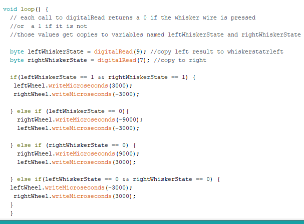
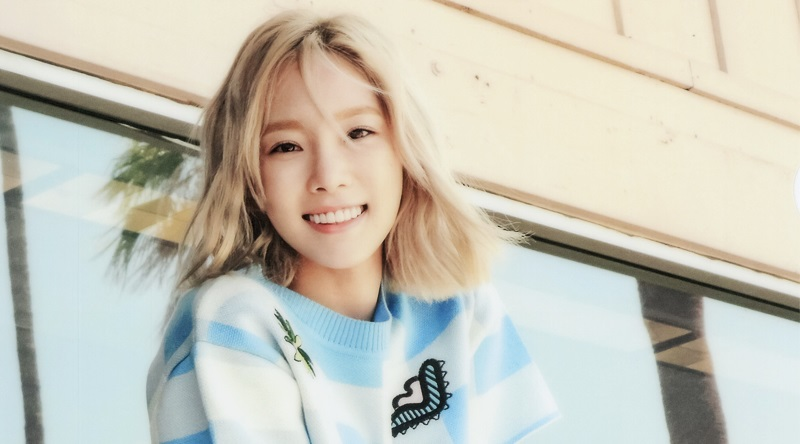
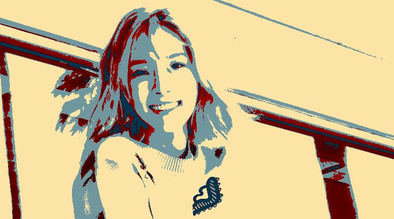

About Me: Venus Ku!
Hey! My name is Venus. Scroll below to check out more stuff about me!
...

Bio
Venus is an innocent, little teenage girl that lives in Castro Valley and goes to Castro Valley High School. She's made lots of memorable friends as she transferred from school to school and joined new programs such as Girls Who Code. She is constantly curious about random stuff that probably everyone already knew and has a brain of a goldfish. Please don't be frustrated by her obvious questions and just try to play along!~
...
Reflection (Day 6.5)
Python and Scratch both have similar loop and pen features, but Python is a bit more complex because it's not as visual and colorful as Scratch. Also, the abbreviations in the Python language is harder to remember. ANNDDD Python is quite picky. Even very small things like colon and putting certain parts of the code before another part can change the way Python works, which was hard. But if I practice a bit more, I'll probably get the hang of it.
Debugging is very challenging, but once you figure it out it's quite rewarding. I remember my mistakes better, and I'm pretty sure I wouldn't make those same mistakes again.
Arduino Blinking LEDs

We learned a bit of C++ using the Arduino to make a LED light show today! The arrays were confusing at first, but after a few more tries we managed to make it work!
Reflection (Day 11)
Both Manuela Veloso's work and Ayanna Howard's work included human interactions with their robots. They both helped people in some way to lessen their load of work in their daily lives.
It's funny because my team gathered up all on one side of the table even though we had the whole other half of the table to ourselves. I thought we worked pretty well together as a small group. Half of the members did the coding, and the other half connected the wires and added on more lights to make the light show work. Our teamwork would have improved if the table was smaller and if we faced each other to talk.
The basic pieces of every Arduino sketch includes: variables, functions, pinMode(), digitalWrite(), delay(), setup(), and loop().
Reflection (Day 12)
I learned that the positive side of the piezo has the be near the pins, and the other side has to have a wire connected to ground.
My favorite part of my robot's dance was when it swirled around and the played music a the same time because it was difficult to make that happen. It just magically happened for a few seconds.
Manuela Veloso and Ayanna Howard need movement and sound outputs for their robots.
Reflection (Day 13)

I learned that spelling is suuuuppppeeerrrr important in C++ coding. We put in "rightWhiskerStare" instead of "rightWhiskerState" for one of our lines, and it made our Arduino robot stop working for about 2 hours. After Ankita pointed out our spelling mistake, it worked well. Our team worked worked well together and was patient enough to sit in front of our code going through everything in our code and checking our hardware. It was quite a thrilling ride!
Reflection (Day 15 - 7/18/17)
Before
After
A list in Python is a group of integers or strings, and indiviual elements can be stored, added, or taken out from the list. Lists can be helpful for storing values for later use.
I can't choose between Anna, Megan, Neha, and Kayley since they're all very easy and fun to work with. Yesterday, Megan and Anna helped me a lot with understanding the basics of the starter code for the Obamicon project. Today, Kayley and Neha helped me with the bugs in my code and had some fun with TRYING to add functions and other colors to the project. Both groups helped me out a lot in different ways! I'm glad I got to work with both!
Reflection (Day 15 - 7/18/17)
I learned that the mysterious "Cloud" is the place where all the database is stored with several servers.
I think LaTeX is a programming language because it changes the style of documents, which is similar to Javascript.
Reflection (Day 16 - 7/19/17)
I understand pretty well about the cloning part in the Django framework where the code from Django to GitHub, but other than that I'm still a bit confused about everything that I copied and pasted.
I would LOVE to learn about making your own dynamic graphics and putting it in my portfolio/Django blog.